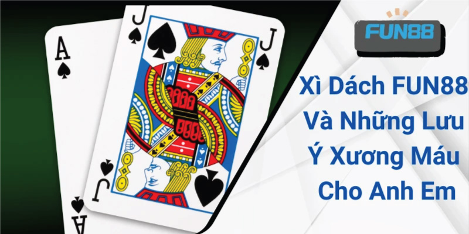

Xì Dách FUN88 Và Những Lưu Ý Xương Máu Cho Anh Em
Xì Dách FUN88 Và Những Lưu Ý Xương Máu Cho Anh Em
Xì dách FUN88 có cách chơi thú vị, đòi hỏi người chơi cần kết hợp những kỹ năng, kinh nghiệm để giành được thắng lợi. Đây cũng chính là nét cuốn hút của bộ môn này, khiến cho đông đảo anh em cược thủ yêu thích và lựa chọn để giải trí. Những thông tin về phương pháp chơi hiệu quả và những điều cần lưu ý sẽ được FUN88 chia sẻ trong nội dung bài viết sau.
Tổng quan về trò chơi xì dách FUN88
Xì dách FUN88 là trò chơi tìm ra người thắng cuộc dựa vào nguyên tắc so điểm giữa người chơi và nhà cái. Một ván cược cần có tối thiểu là 2 và tối đa 4 người để có thể bắt đầu. Quá trình chơi bài sẽ bắt đầu với 2 quân ở mỗi người và cược thủ hoàn toàn được quyền bốc thêm bài để đạt được số điểm càng gần 21 nút càng tốt.
Thông tin chi tiết về game bài đổi thưởng hot nhất hiện nay
Đây là một trò chơi đối kháng giữa nhà cái cùng các thành viên tham gia. Vì thế nếu muốn chiến thắng, anh em cần đánh bại được dealer với số điểm cao hơn. Nhưng lưu ý mức tối đa chỉ là 21, nếu vượt quá con số này bạn sẽ thua cuộc. Nhờ cách chơi đơn giản nhưng không kém phần kịch tính, bộ môn này đã thu hút được lượng người hâm mộ cực đông đảo.
Giá trị của những là bài trong trò chơi xì dách FUN88
Đối với các là bài từ 2 đến 10 thì điểm số sẽ được tính tương đương với số nút trên đó. Những quân bài tây từ J, Q, K đều được tính chung là 10 điểm. Đối với lá Át (A), tùy ý người chơi có thể lựa chọn giữa điểm 10 hoặc 11 sao cho phù hợp. Ngoài ra, sẽ có 2 trường hợp đặc biệt tới trắng là khi sở hữu 2 lá Át (Xì bàn) hay 1 quân A kết hợp với 10 nút hoặc 1 trong 3 lá bài tây (Xì dách).

Cách tính điểm khi tham gia xì dách tại FUN88
Một số thuật ngữ cần nắm khi tham gia xì dách FUN88
Trong quá trình diễn ra ván bài xì dách FUN88 sẽ có những thuật ngữ mà anh em cần phải nhớ. Nắm được quyền lựa chọn trong xì dách sẽ giúp người chơi tránh gặp phải những bất lợi cho bản thân mình.
Kinh nghiệm chơi xì dách FUN88 dễ thắng nhất từ cao thủ
Xì dách FUN88 được các tay chơi chuyên nghiệp đánh giá là không quá khó, tuy nhiên người chơi cần tính toán để tìm ra quy luật để có thể chiến thắng. Thêm vào đó là việc học hỏi những kinh nghiệm từ người đi trước cũng sẽ khiến cho tỷ lệ thắng cược được cải thiện đáng kể đấy!

Kinh nghiệm chắc thắng bài xì dách từ dân cược chuyên nghiệp
Dồn 100% sự tập trung vào ván cược
Một tay chơi chuyên nghiệp sẽ luôn chú ý quan sát từng diễn biến trên bàn cược và không bị phân tâm bởi tác động từ môi trường. Việc tập trung sẽ giúp anh em phân tích, tìm ra được quy luật để chiến thắng. Và ngược lại, nếu bị ảnh hưởng bởi những yếu tố khác, người chơi sẽ rất dễ mắc phải những sai lầm dẫn đến thua cược.
Tránh sử dụng tính năng Split khi sở hữu đôi 10
Nếu hai lá bài đầu tiên là 10 thì anh em nên dằn ngay chứ đừng nên tách chúng thành 2 tụ mới. Hãy giữ 2 lá với tổng điểm là 20 để so sánh sẽ có cơ hội chiến thắng cao bởi khả năng rút được 21 nút của nhà cái là rất khó.
Bên cạnh đó, khi gặp đôi 8 bạn nên tách thành 2 tụ bài mới, vì tổng điểm 16 sẽ khó để ăn được nhà cái. Khi tách ra, 1 trong 2 tụ sẽ có cơ hội thắng, giúp cho anh em không bị mất tiền cược ở ván chơi này.
Áp dụng tính năng nhân đôi khi sở hữu đôi 5
Ván bài bắt đầu với đôi 5 đồng nghĩa với việc số điểm tổng của bạn là 10. Lúc này hãy sử dụng tính năng nhân đôi để được chia thêm 1 lá bài. Khi đó, khả năng xuất hiện quân bài lớn như 10, J, Q, K là vô cùng cao.
Những điều người chơi cần lưu ý khi tham gia xì dách FUN88
Một sai lầm lớn khi tham gia xì dách FUN88 chính là không có giới hạn cho việc đặt cược. Việc không đặt ra mức chi tiêu sẽ khiến anh em dễ dàng bị mất kiểm soát và gặp phải những rủi ro như ra về tay trắng.
Bên cạnh đó, khi gặp đôi 8 bạn nên tách thành 2 tụ bài mới, vì tổng điểm 16 sẽ khó để ăn được nhà cái. Khi tách ra, 1 trong 2 tụ sẽ có cơ hội thắng, giúp cho anh em không bị mất tiền cược ở ván chơi này.
Lời kết
Với những thông tin về xì dách FUN88 mà chúng tôi chia sẻ trên đây, chắc chắn đã giúp bạn đọc có thêm kiến thức và kỹ năng chinh chiến trong mọi ván cược. Chúc cho anh em có những giây phút thư giãn tuyệt vời cùng với đó là cơ hội chiến thắng nhà cái để thu về lợi nhuận dồi dào nhé!